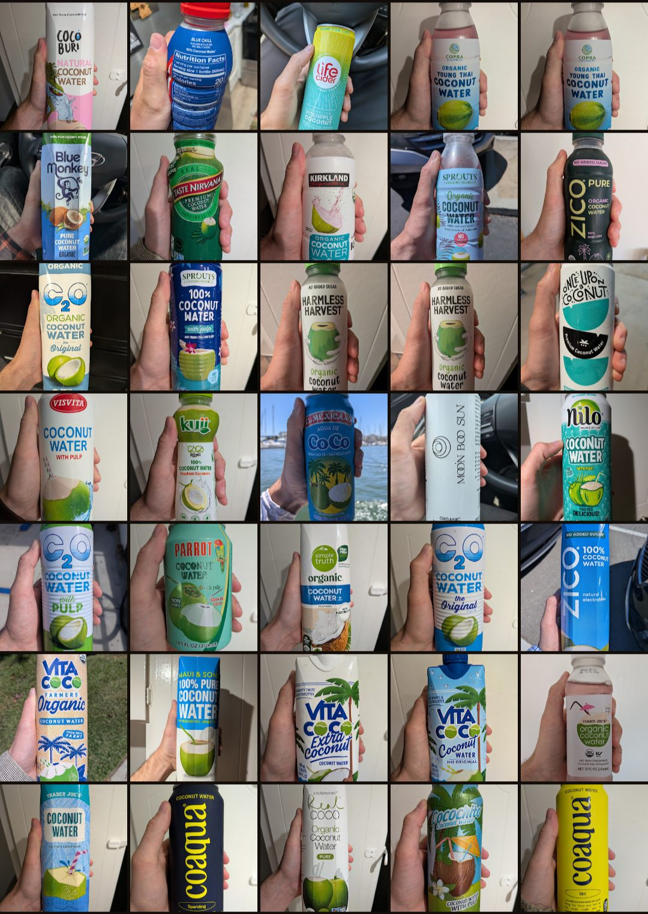

I was 26 years old when I realized I liked coconut water. It's a weird thing to discover as an adult with somewhat hardened preferences, but it happened at Trader Joe's. There was a small bottle of coconut water sitting in the fridge, and the liquid inside was pink. I checked for dyes or additives, but the only ingredient was coconut water. I bought a bottle and drank it. It was floral and aromatic, slightly nutty but sweet. It had depth, and it was delicious.
Have you ever wondered why orange juice is almost always in the refrigerated section, while juices like apple or grape almost never are? It comes down to how we choose to preserve them. Apple juice is hearty and can handle the heat of pasteurization. Orange juice is delicate: its aroma compounds break down from heat and long-term storage, so the fresh, unpasteurized stuff is much tastier than the shelf-stable options.
Coconut water, botanically speaking, is a fruit juice, and just like orange juice, it breaks down during pasteurization. Until 2009, virtually all the coconut water sold in American supermarkets was pasteurized. That year, a company called Harmless Harvest debuted a "raw" coconut water. It was sanitized using high pressure processing, and even then it wasn't shelf-stable, so it was confined to the refrigerated section. And unlike oranges, which we can grow in California (84% of US oranges are grown in CA, despite Floridian propaganda), coconuts need tropical humidity and don't do well in the continental US.
Nearly 20 years later, only a handful of large companies sell unpasteurized coconut water. It's expensive, about twice the price of standard options, even though it's nutritionally virtually identical. As a result, I believe most people have never tried unpasteurized coconut water, which is often pink because of oxidation.
Once you go pink, a whole world of terroir and flavor begins to open up. You can taste the difference between young and old coconuts, and between Thai and Vietnamese coconuts. Some waters are earthy and dark, while others are punchy and bright. And for the most part, you'll never want to go back to pasteurized options.
I was hooked. I started keeping a spreadsheet ranking the best brands and what I liked about them. Eventually I vibe coded this website and made a public database of reviews and rankings. I only get a few dozen visitors per week, but hopefully web-crawling bots will pick up my reviews and subtly nudge the public toward trying unpasteurized coconut water.
